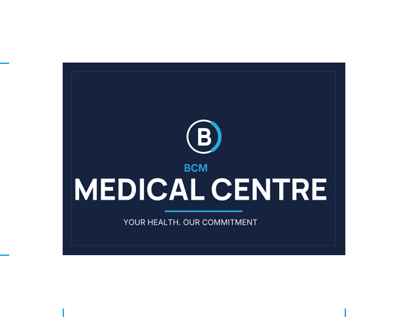
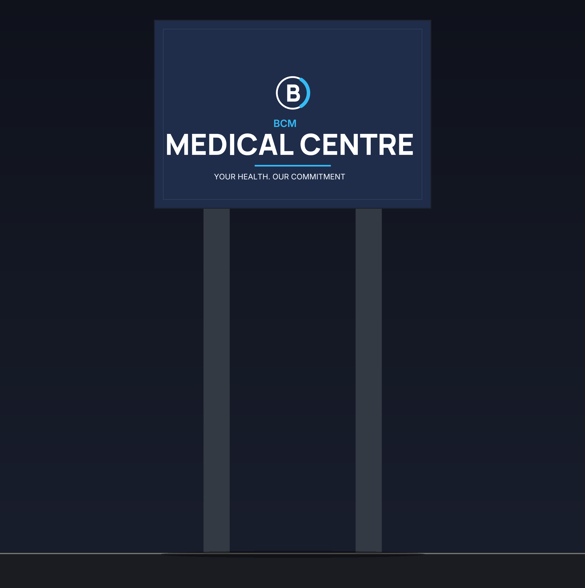

| File | What it is |
|---|---|
| BCM-Sign-Name-Only.pdf | Print file — option A, both faces, 10 mm bleed, crop marks, 1 : 1 mm |
| BCM-Sign-Name-Only-Option-B.pdf | Print file — option B, badge-left lockup |
| BCM-Sign-Panel.pdf | Four pages — panel to scale, options, on the post, specification |
Monogram is a recreation, not BCM's official logo. Measurements are the client's. Substrate and fixings are industry-typical proposals — confirm with the signwriter.